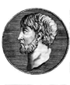

Archimedes
Archimedes lebte in der Zeit von 287-212 v.Chr. in Syrakus auf Sizilien.
Viele Sprüche sind überliefert, so auch "Gebt mir einen festen Punkt und ich werde die Erde aus den Angeln heben". Dies war sein Ausspruch, nachdem er die Hebelgesetze fand.
Archimedes ersann allgemeine Methoden zur Bestimmung der Flächeninhalte krummliniger ebener Figuren und der
Rauminhalte von Körpern, die durch gekrümmte Flächen begrenzt sind. Er wandte diese Methode auf viele spezielle
Beispiele an, Kreis, Kugel, Parabelsegmente und auf Körper, die durch Rotation entstehen.
Er fand ein Verfahren zur Berechnung von pi und sein Näherungswert war zwischen 31/7 und
310/71.
Archimedes fand auch Näherungswerte für Quadratwurzeln. Er erfand auch ein Zahlensystem mit dem er beliebig grosse Zahlen behandeln konnte (anders als die griechischen Zahlen).
Das "archimedische Prinzip" und seine zahlreichen praktischen Anwendungen gehören heute zum täglichen Brot der Schiffbautechniker.
Kein Wunder, dass sich auch Archimedes mit den nach Platon drei 'klassischen Mathematikproblemen' des Altertums (Quadratur des Kreises, Dreiteilung des Winkels, Verdoppelung des Würfels) beschäftigen musste.
Sein Leben verlief ruhig bis zu seinem Tod im Jahre 212 v.Chr.: Der zweite punische Krieg war in vollem Gang. Er half mit zur Verteidigung der Stadt, durch Riesenkatapulte und Sonnenspiegel wurde der Angriff von Seeseite verhindert. Doch erst der Schatten eines römischen Soldaten auf einer Zeichnung im Staub veranlasste Archimedes zu dem bekannten Ausspruch: "Störe meine Kreise nicht". So starb ein unbewaffneter, ehrwürdiger 75-jähriger Geometer.


Abhandlungen
Archimedes